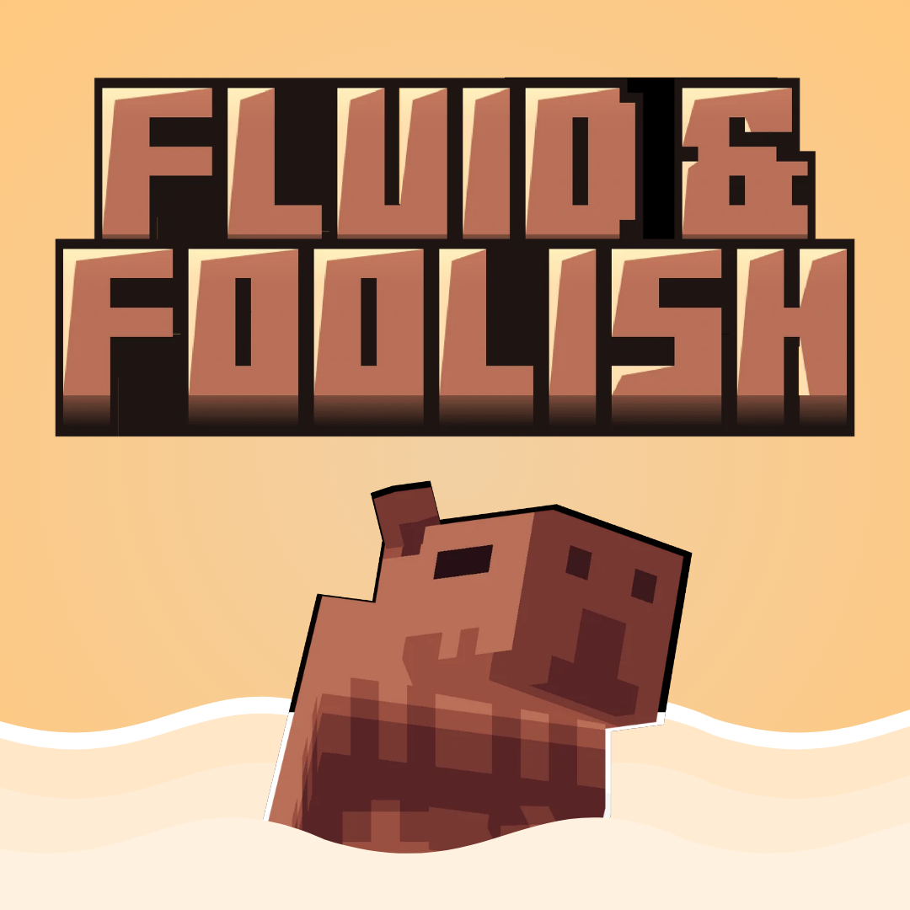

Em desenvolvimento ativo
Fluid & Foolish
Move fluidly, act foolish! :D
O Silly Moves voltou com visual novo! É um resource pack de animações pra Minecraft Java que reformula cada ação do seu personagem, movido a Punchy! Moves. Ainda é um trabalho em progresso, então o seu feedback no Discord ajuda a moldar o que vem a seguir.
- Entities
- Realistic
- Tweaks
- Vanilla Like
Um monte de movimento, em seis categorias
- Idle & CameraIdle, ações aleatórias e por bioma, câmera
- LocomotionAndar, trotar, correr, strafe
- AirbornePulo, queda, mergulho, mace
- FlightVoo criativo e elytra
- WaterNadar, mergulhar, boiar
- ActionsArco, balde de axolote e mais
Já rolou shoutout em vídeo de Enderverse e Demonjoe. Valeu demais!
Movido a Punchy! Moves. Ver o mod no Modrinth